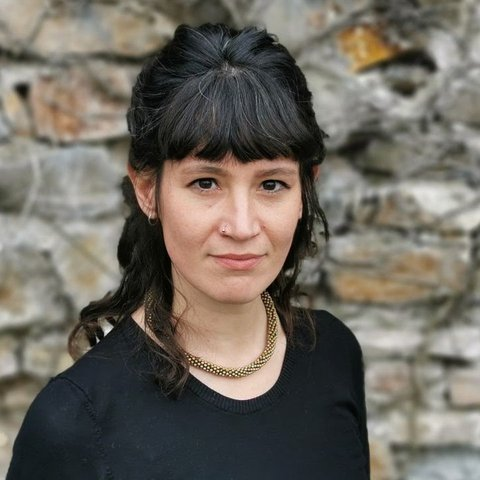

Aiuto le organizzazioni che gestiscono servizi di emergenza a prendere decisioni migliori su mezzi, personale e tempi di risposta, a partire dai loro dati amministrativi e con valutazioni d'impatto rigorose. Ho lavorato con i dati di centrali operative e pronto soccorso di varie regioni, insieme a enti pubblici, ospedali e ricercatori.
KPI, tempi di risposta, colli di bottiglia e andamento della domanda per centrali operative e servizi di emergenza.
Il nuovo protocollo, la nuova tecnologia o la riorganizzazione hanno funzionato? Disegni prima/dopo credibili, non semplici confronti descrittivi.
Allocazione dei mezzi, organizzazione dei turni, carichi di lavoro e fatica, modelli di impiego e contratti.
Collegamento di grandi archivi amministrativi: missioni, accessi in pronto soccorso, ricoveri, mortalità, dati geografici e meteo.
Report e sintesi chiare per dirigenti, regioni e decisori pubblici.